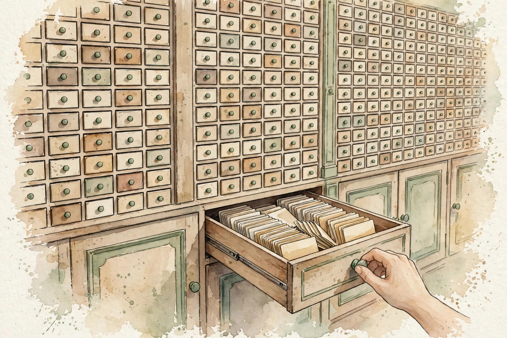
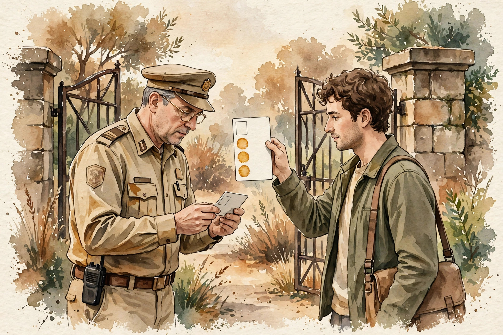

CS224N · Companion artifact U09 of 15
Models that act: they call tools, read the results, and cite evidence. The math is small, the discipline is large.
“From the lesson” marks facts from lessons/u09_tools_agents_retrieval.md. “Illustration” marks interactive toys that run the lesson’s rules over tiny inputs. “Companion” marks advice from the companion author. Tags after each section name the lesson leaf, for example C04.
Section 1 · C01
From the lessonC01 §2, §3
The model cannot answer from its weights alone. How does it get the missing fact? The model narrates its plan, acts, reads the result, then plans again. The loop turns a one-shot guess into a program with feedback. The Observation is the only new information in the loop. Everything else is format. The loop is a while-loop with the model as the loop body.
From the lessonC01 §4, §5
From compute_u09.py: a 2-hop question ("the mayor's party, then the mayor's age"). Trace: Thought (14 tokens), Action search (8), Observation (22), Thought (10), Action search (8), Observation (18), Answer (12). 7 steps, 92 tokens total. The two Observations (22 + 18 = 40 tokens) carry the new facts. Reading results costs more than acting.
From the lessonC01 §11
The broken assumption is that the loop stops on its own. A tool returns "no results" forever and the model rephrases the same query for 50 steps. Termination needs an explicit rule (C11). The loop alone never guarantees it.
compute_u09.py (executed 2026-10-06): thoughts 24, actions 16, observations 40, answer 12. Total 92.The Observation is the only new information. Everything else in the loop is format, and the loop needs an explicit stop rule.
Section 2 · C02
From the lessonC02 §2, §3
The model emits search("mayor"). What makes that a real call instead of text? The schema is a contract: {name: search, args: {q: string, k: int}}. The model proposes, the validator disposes. A call that fails validation never executes. This is the same as a type checker, only the programmer is a language model.
From the lessonC02 §4, §5
From compute_u09.py: 4 of 6 calls valid. The invalid two: search with a missing argument (wrong arity), delete which is not a declared tool (unknown name). Validity is three checks: the name exists, the arguments match the schema (types and required fields), the caller's permissions cover the tool (C10).
From the lessonC02 §11
The broken assumption is that the model will respect the schema. The model invents search_v2 because it saw the name in a hallucinated example. The validator must reject, and the prompt must show only real names.
Name, arity, types: all three must hold, or the call never executes. Validation is dull on purpose. Dull is auditable.
Illustration The validator. The schema is {name: search, args: {q: string, k: int}}. Pick a call and watch the three checks run.
call
q
k
Section 3 · C03
From the lessonC03 §2, §3
The tool returns an error. Does the agent learn anything? calc("2++2") returns SyntaxError: unexpected +. The next Thought quotes the error and calls calc("2+2"). The error text is data. A good agent treats the error message as an observation, not as a failure. Retry is the loop's error handling: two retries with new information each time, then escalate.
From the lessonC03 §4, §5
Hand-set toy, labeled as such: first call fails with the syntax error, second call succeeds. Two calls, one error message, zero model changes. The feedback did the work that training would have done. The information gain is the difference between "it failed" and "it failed because".
From the lessonC03 §11
The broken assumption is that errors are always informative. The tool returns "error 500" and the model invents a new theory each retry, burning the budget. Cap and escalate.
Section 4 · C04
From the lessonC04 §2, §3
The answer lives in your documents, not in the model's weights. How do you get it in? Retrieve k chunks, prepend to the prompt, generate. The pipeline factorizes: P(answer | query) = sum over chunks of P(chunk | query) times P(answer | chunk, query). Top-k approximates the sum with the k best chunks. The approximation is good when the mass concentrates on few chunks.
From the lessonC04 §4, §5
From compute_u09.py: 20 chunks, 3 relevant at ranks 2, 5, 9. Recall at k: 0.000 (k = 1), 0.333 (k = 3), 0.667 (k = 5), 1.000 (k = 10). The first relevant chunk sits at rank 2, so k = 1 finds nothing. Recall never falls when k grows. Precision does. k is a recall knob with a precision cost.
From the lessonC04 §11
The broken assumption is that the top chunk is the right chunk. The rank-1 chunk shares keywords but not the answer, and the model cites it confidently. Retrieve more, rerank (C07), require citations (C08).

compute_u09.py (executed 2026-10-06): 0.000, 0.333, 0.667, 1.000 at k = 1, 3, 5, 10.The model is only as good as what retrieval hands it. Garbage in, fluent garbage out.
Illustration The recall knob. The relevant ranks are fixed at 2, 5, 9 (the lesson toy). Turn k and watch recall move.
k
Section 5 · C05
From the lessonC05 §2, §3
The answer is wrong. Which half broke? Two machines, two contracts. The retriever's contract: the right chunk is in the top-k. The generator's contract: given the right chunk, the answer is right. Test each contract with the other half frozen.
From the lessonC05 §4, §5
Hand-set toy, labeled as such: fix the generator, swap two retrievers (ranks [2,5,9] vs [1,2,3]): recall at k = 5 moves from 0.667 to 1.000 with the generator untouched. The retriever owned the failure. The swap test is an ablation: hold the generator fixed, vary the retriever, the delta in end-to-end score is the retriever's contribution.
From the lessonC05 §11
The broken assumption is that a better retriever always helps end to end. The generator may ignore the new chunks (position bias toward its priors): end-to-end flat while recall rises. Test the generator's contract too.
Hold one half frozen, vary the other, read the delta. Attribution is an ablation, not a guess.
Section 6 · C06
From the lessonC06 §2, §3
The answer spans 30 tokens, the chunker cuts every 200. What breaks? The chunker is a cookie cutter: every cut risks slicing an answer in two. Overlap is insurance: pay extra index tokens so no span falls in a crack. Split rate: max(0, s - o) / (c - o). When o reaches s, the rate is zero: every span fits inside some chunk.
From the lessonC06 §4, §5
From compute_u09.py: doc 1000 tokens, chunk 200, span 30. Overlap 0: 5 chunks, split rate 0.15. Overlap 50: 7 chunks, split rate 0.00. Insurance costs 2 extra chunks (40 percent more index tokens) and removes the failure class.
From the lessonC06 §11
The broken assumption is that smaller chunks are always better. At c = 50 every multi-sentence answer splits, and recall collapses even though precision per chunk looks fine. Size to the answer, not to the index.
compute_u09.py (executed 2026-10-06): 0.15 at overlap 0, 0.00 at overlap 50.Overlap at least the answer span length removes the split failure class. Price the insurance in index tokens.
Illustration The cookie cutter. The split-rate formula is C06’s. The document is yours. Prefilled with the lesson toy.
doc tokens
chunk c
overlap o
span s
Section 7 · C07
From the lessonC07 §2, §3
Dense retrieval misses exact terms, sparse misses meaning. What now? Two nets, one pool. Sparse catches the keywords, dense catches the paraphrase. Rerank reads the small pool carefully with a heavy model. Cheap breadth first, expensive depth second.
From the lessonC07 §4, §5
Hand-set toy, labeled as such: a chunk scores 0.72 sparse, 0.41 dense. Fused score = w times dense + (1 - w) times sparse. w = 0.0 gives 0.720, w = 0.5 gives 0.565, w = 1.0 gives 0.410. The fusion is a dial, not a discovery: the weight moves the winner, tune it on a dev set.
From the lessonC07 §11
The broken assumption is that rerank fixes bad retrieval. The answer sits at rank 200, m = 50, rerank never sees it. Rerank is a polish, not a rescue.
Fuse sparse and dense with a tuned weight, then rerank the small pool. Rerank polishes. It does not rescue.
Illustration The fusion dial. The convex mix is C07’s. The scores are the lesson toy’s.
w (0 = sparse, 1 = dense)
Section 8 · C08
From the lessonC08 §2, §3
The model answers with a quote. How do you check it? A citation is a pointer, not a proof. It says "look here", and the reader (or the checker) can verify. A system that cites is auditable. A system that does not is a rumor. Span grounding: the generator must emit pointers into the retrieved chunks, and a checker verifies each pointer resolves to a span that entails the claim.
From the lessonC08 §4, §5
Hand-set toy, labeled as such: 4 claims, 3 cite a span that contains them, 1 cites a span that does not. Citation precision 0.75. The unsupported one quotes the right document but the wrong paragraph. Near is not support. Two failure classes: dangling pointers, unsupported claims.
From the lessonC08 §11
The broken assumption is that a cited answer is a true answer. The span supports the claim, but the span itself may come from a poisoned chunk. Citations move trust to the corpus. They do not create it.
Citations move trust to the corpus. They do not create it. Check that the pointer resolves and the span entails the claim.
Section 9 · C09
From the lessonC09 §2, §3
The conversation is 12000 tokens, the window is 8000. What survives? Context is the desk, memory is the filing cabinet. The desk holds what the current step needs. The cabinet holds what future steps might need. Summarization moves papers from the desk to the cabinet.
From the lessonC09 §4, §5
From compute_u09.py: 12000 tokens compress to 900, ratio 13.3. The mechanism is lossy compression under a budget: keep the newest N tokens verbatim (recency), summarize the rest (abstraction), pin facts that must not change (anchors). Retrieval over memory (C04's machinery) beats rereading the whole log.
From the lessonC09 §11
The broken assumption is that the summary keeps what matters. The summary drops the one constraint the user stated ("never email"), the agent emails. Pin constraints as anchors, never summarize them away.
compute_u09.py (executed 2026-10-06): 12000 raw tokens to 900 summary tokens, ratio 13.3.Summarize the chatter, keep the decisions, pin the constraints. Anchors never get summarized away.
Section 10 · C10
From the lessonC10 §2, §3
The agent wants to run delete. Who says yes? Every tool call carries a badge. The badge lists what this run may touch. No badge, no call. The human issues the badge. The agent cannot upgrade it. The check is set membership: required(tool) is a subset of granted(run).
From the lessonC10 §4, §5
Hand-set toy, labeled as such: granted {read}. search requires {read}: pass. delete requires {write}: fail. One set operation per call, zero model judgment involved. Destructive tools add an approval step: pause, ask, resume.
From the lessonC10 §11
The broken assumption is that the model will ask before deleting. The model deletes first and explains after, because the prompt said "be proactive". Enforcement lives outside the model.

Enforcement lives outside the model. Prompt-only permissions are wishes. Code enforcement is the gate.
Illustration The badge checker. The subset rule is C10’s. Type a granted scope and a required scope.
granted (comma separated)
required (comma separated)
Section 11 · C11
From the lessonC11 §2, §3
Who decides the agent is done? Two exits: success (the answer parses) and the fire escape (the step cap). Success is checked, the cap is counted. An agent with only one exit is a gamble. The loop is while steps below B and not valid(answer). Termination is guaranteed by the cap. Correctness is attempted by the validator.
From the lessonC11 §4, §5
From compute_u09.py: the toy stops at 7 steps, 92 tokens, under the cap of 10. The expected cost is E[steps] times cost per step. The 50-step counterexample in C01 shows the cap binding.
From the lessonC11 §11
The broken assumption is that the model knows when it is done. The model emits "Final answer" three times with three different answers. The validator, not the model, declares done.
Success is checked, the cap is counted. The validator declares done, never the model.
Section 12 · C12
From the lessonC12 §2, §3
The agent failed. Do you fix the retriever, the tool, or the prompt? Every failure gets one label: the retriever handed the wrong chunk, the tool errored or lied, or the policy chose badly. Fix the biggest class first. Sort classes by frequency, fix in order, re-measure.
From the lessonC12 §4, §5
From compute_u09.py: 10 failures classified as R (retriever) 4, T (tool) 3, P (policy/prompt) 3. The counts say where the budget goes: the next sprint improves retrieval (C07), not the prompt.
From the lessonC12 §11
The broken assumption is that one label always fits. The retriever was fine and the tool was fine, but the policy gave up after one try (C11's cap too tight). The taxonomy needs the loop parameters as context.
compute_u09.py (executed 2026-10-06): R 4, T 3, P 3 of 10. The retriever owns the next sprint.Illustration The autopsy board. Paste failure labels (R, T, P), one per line, and see where the budget goes.
Wisdom index
Each nugget states the idea in plain words, why it matters, and the transferable principle. Every one is anchored to its lesson section.